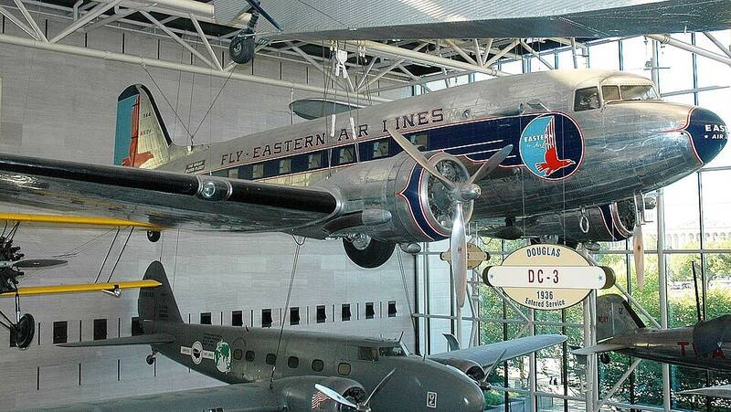

Chiles-Whitted sighting
Near Montgomery, Alabama, 1948

Two Eastern Air Lines pilots reported a cigar-shaped craft with rows of lit windows. One of Project Sign's key cases. 1
Open in the interactive Watcher
Sources
- Chiles-Whitted UFO encounter Wikipedia